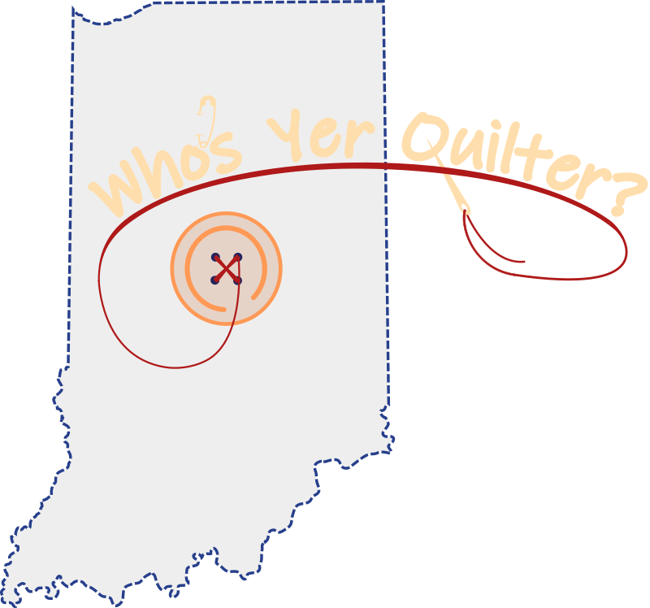

Cindy from

.jpg)


.jpg)
My name is Cindy Grimes, and I am a long arm quilter. I was born and raised here, in the great state of Indiana, at the Crossroads of America – Indianapolis! I have lived here all of my life, and am proud to be called a Hoosier! My long arm quilting service is called, Who’s Yer Quilter? The answer to that question could be Cindy from Indy!
.jpg)
.jpg)
A little background information about me. I have always wanted to learn how to quilt, and in 2000, I was introduced to someone who was a long-time quilter. I told her that I wanted to try quilting, but I was somewhat apprehensive, since I was not a seamstress. She said, “quilting is very easy – you just cut the fabric into little pieces and sew them back together again!” That was all the motivation I needed to begin. She helped me pick out my first quilt block design – a log cabin. We went to the fabric store, purchased some fabric and quilting notions, and the next thing I knew, I had finished my very first quilt. I made that first quilt top on a Kenmore machine, which I continue to use today. I also have a Janome 4120 QDC machine that I sew on as well.
.jpg)
.jpg)
.jpg)
And now, a little bit about “Big Bertha.”My long arm machine is an ABM International Innova 22 Lightning Stitch with a 12-foot table. I affectionately call my machine “Big Bertha.” She got her nickname because whenever my friends and family come to visit my quilting studio for the first time, they all say, “I had no idea it was that big!” But bigger is better, because that means that I can quilt anything from a baby blanket to a king size bed quilt! I purchased “Big Bertha” in 2018, from Accomplish Quilting, right here in Indy. Bertha and I have been working together, completing charity quilts for the Quilting Guild of Indianapolis. My long arm quilting service style is edge to edge, using pantographs.
.jpg)
.jpg)
Other fun “tid-bits” about me:
Thank you for letting me introduce myself to you! It is my hope that you won’t send your quilt top outside of the Hoosier State to be completed, but instead, have your project finished locally. Perhaps you will even allow me – Cindy from Indy, to turn your quilt into a hometown heirloom for you!
| Quilt Item | Size | Stitching Cost* | Thread Cost | Total Cost |
|---|---|---|---|---|
| Baby | 30 x 40 | 20.00 | 7.50 | 27.50 |
| Lap | 36 x 48 | 26.00 | 7.50 | 33.50 |
| Crib | 36 x 52 | 28.00 | 7.50 | 35.50 |
| Throw | 50 x 65 | 50.00 | 7.50 | 57.50 |
| Twin | 70 x 90 | 100.00 | 7.50 | 107.50 |
| Full / Double | 85 x 108 | 140.00 | 11.00 | 151.00 |
| Queen | 90 x 108 | 150.00 | 11.00 | 161.00 |
| King | 110 x 108 | 180.00 | 15.00 | 195.00 |
*Stitching cost is defined as edge-to-edge pantograph stitching in repeated rows.
Download Prep Ticketprint and fill it out before coming to visit Who's Yer Quilter. Thank you!